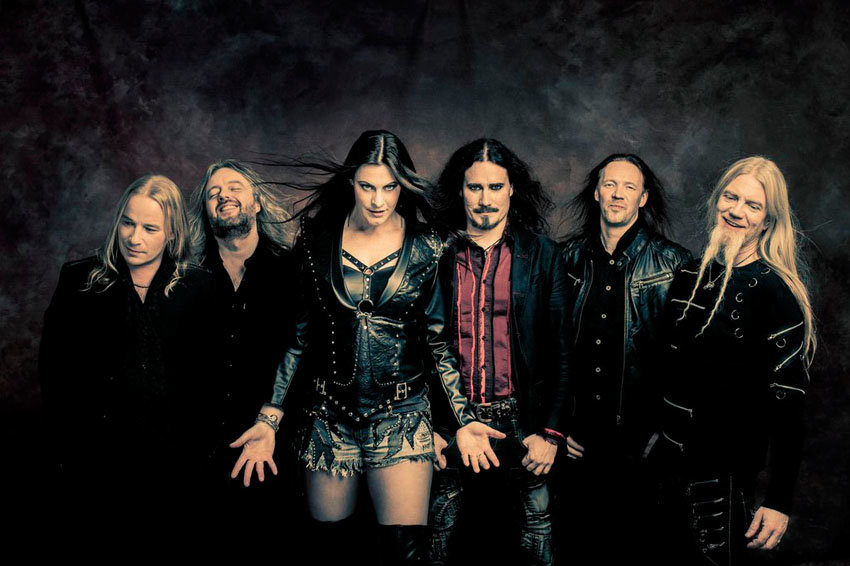
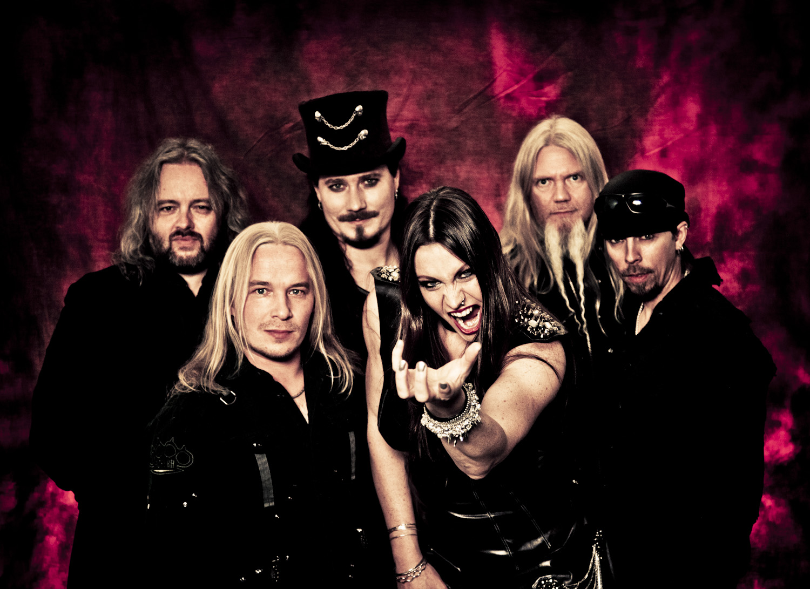

 
29 мая 2020 года клубе Stereo Plaza (Стереоплаза) в Киеве выступят монстры симфонического рока- всемирно известная группа Nightwish, которая включила Украину в программу своего Мирового турне-2020. Такая маленькая северная страна как Финляндия подарила нам не одну мировую звезду, чья музыка с терпким привкусом ночи пленяет наши сердца. Стоит только вспомнить Poets Of The Fall, HIM, The Rasmus. Но Nightwish — без преувеличения, одна из самых популярных финских команд во всем мире. И в Украину они едут не одни, а с еще одним молодым финским коллективом — Beast In Black.
Чтобы попасть на концерт Nightwish в Киеве, покупайте билеты на нашем сайте и в кассах города. Цена билетов от 1050 до 4200 гривен. Еще больше концертов ищите в афише на нашем сайте. Nightwish песни: